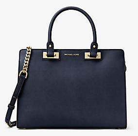

My Favorite Things
Animè
I started watching animès when I was in grade school. These were the popular shows for kids back then to watch. I love the way they look and the way they dress. I especially like their different hair colors and eyes and of course their superpowers.
Accessories and more
Purses and shoes are on my list of favorite things. I like to have different designs and/or kinds. When I was younger, my mom used to buy me dolls, baking toys, and some other girl toys. I never played these toys and had to save money to buy the toy that I want, gun. Now that I am grown up, I bought my first real gun and I love it. I would totally have a gun range built in my house if I have all the money in the world.
- Purses
 Shoes
Shoes Gun
Gun
Travel
My husband and I love traveling. We have been in some countries in Southeast Asia. Now, we are hoping to visit Europe in the near future. Below is the top of our list.